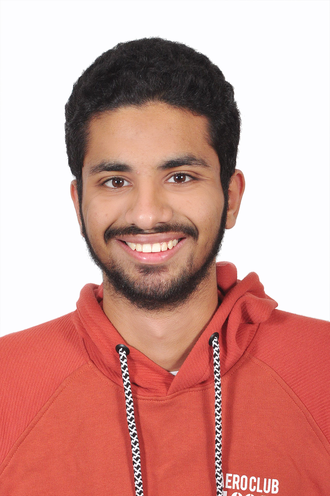

Marwan Wael

Summary
First-year computer and communication engineering student seeking real-world experience to apply theoretical knowledge. Eager to contribute creative problem-solving skills and passion for technology in a collaborative environment. Committed to continuous learning and academic success in the dynamic tech field.
Education
- High School Graduate
- Bachelor of Information and Communication engineering (Undergraduate)
Work Experience
None
Skills
- C++ Programming (Good Knowledge of the Imperative Paradigms)
- Operating Systems: Windows
- Software Development Tools: Visual Studio/Community/Code
- Adaptability - Problem Solver - Team Worker -
Emotional Intelligence - Fast Learning - Critical
thinking
Certifications
- The Fundamentals of Digital Marketing by Google
Other
Contact Me
Hobbies